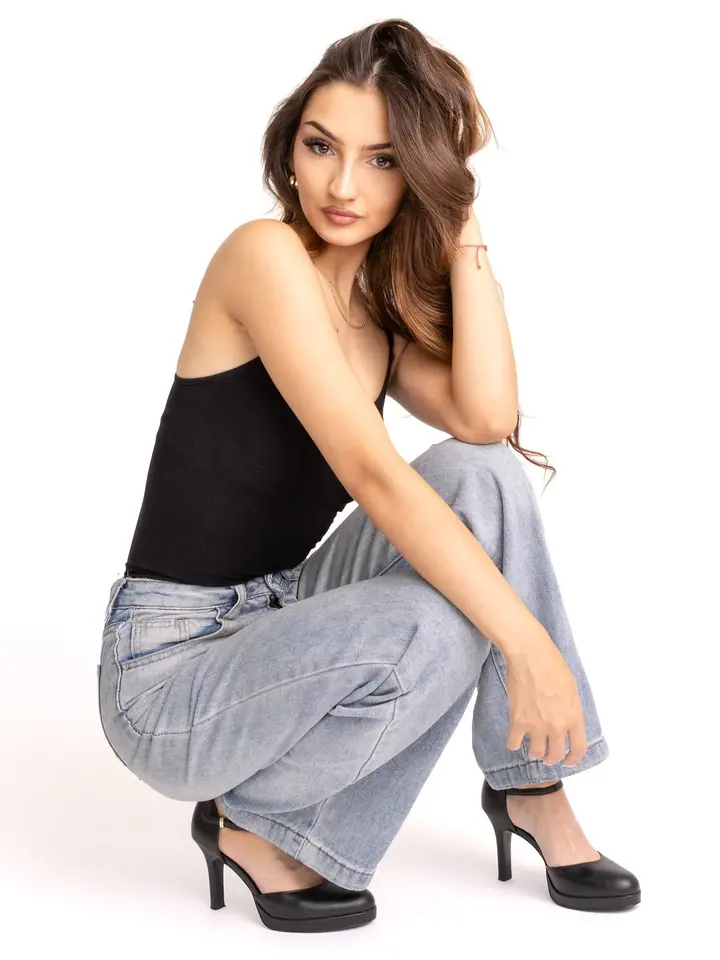
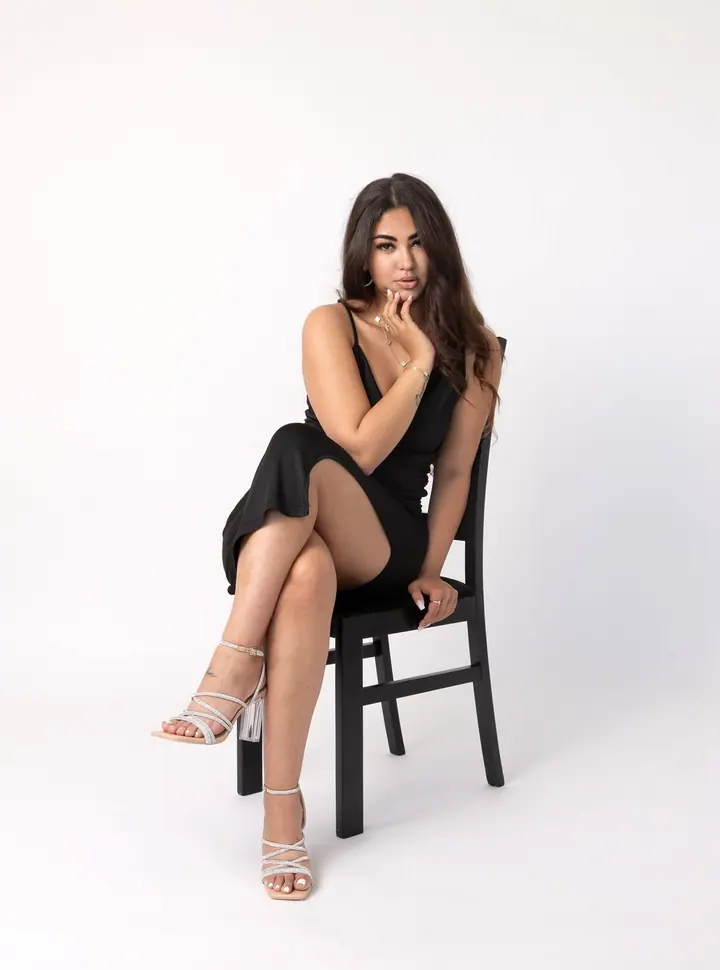
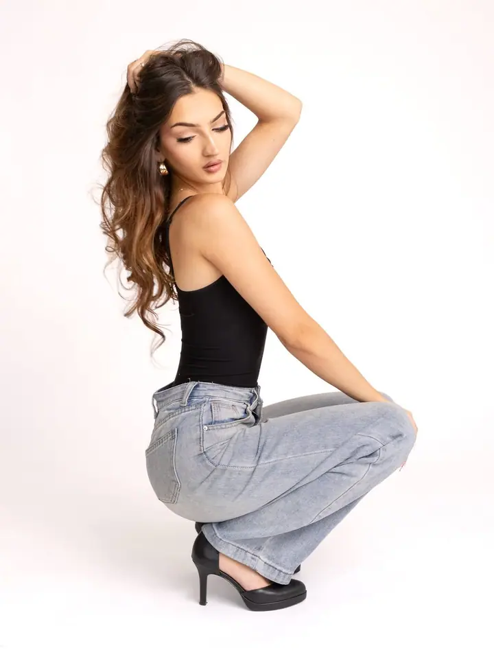
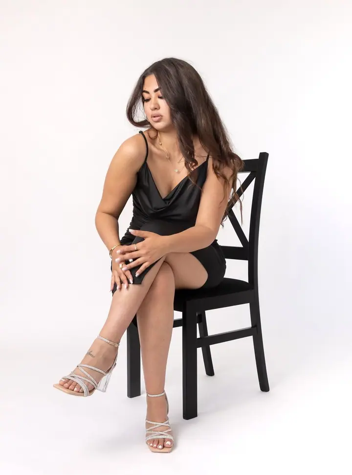
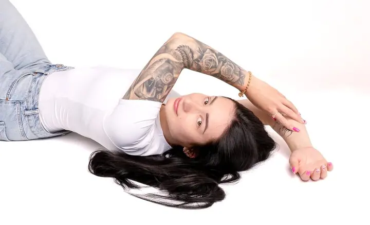
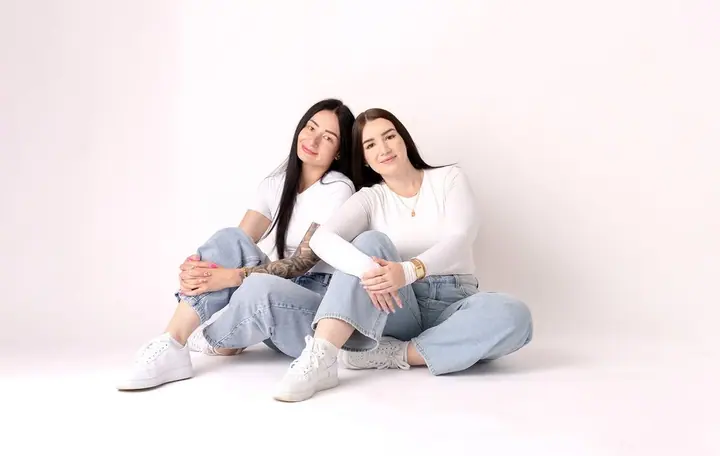

Portréty žen
Fotím ženy sebevědomé i ty, které si zrovna moc nevěří. Každá žena by měla mít aspoň jednou fotky, na kterých se sama sobě bude líbit.





Jmenuji se Anna Belsonová a v Karviné fotím ženy, páry a rodiny. Fotit můžeme u mě na bílém pozadí, kde vzniknou čisté a nadčasové fotografie, nebo vyrazíme ven do lesa, na louku či do města. Pózovat umět nemusíte, o to se postarám já.
Více o mně
„Protože věřím, že každá žena by měla mít aspoň jednou fotky, na kterých se sama sobě bude líbit.“
— Anna Belsonová
Fotím ženy sebevědomé i ty, které si zrovna moc nevěří. Každá žena by měla mít aspoň jednou fotky, na kterých se sama sobě bude líbit.
Opravdové chvíle ve dvou, kdy se smějete, objímáte nebo si jen užíváte čas spolu. Na bílém pozadí nebo venku, kde se budete cítit dobře.
Společný čas celé rodiny bez strojeného pózování. Vyrazíme do lesa, na louku nebo do města, kamkoliv, kde to bude sedět právě vám.
Jemné fotky z období, které se už nebude opakovat. Ve studiu na čistém bílém pozadí nebo venku v přírodě.
Ahoj, jsem Anička. Je mi 27 let a jsem maminka roční holčičky. Doma mi dělají radost dvě chlupaté kočky a jeden úžasný chlap bez vlasů. Miluju fotografování, zvířata, knihy a dlouhé procházky.
Momentálně jsem na rodičovské dovolené, ale rozhodla jsem se vrátit k focení naplno a věnovat se mu srdcem i duší. Fotografie je pro mě způsob, jak zachytit opravdové emoce, jemné detaily a chvíle, které už se nikdy nebudou opakovat.
Skoro každý mi na začátku řekne, že neumí pózovat nebo neví, kam dát ruce. Buďte úplně v klidu, stačí přijít takoví, jací jste. Většina lidí pak odchází s větou: „To bylo vlastně úplně v pohodě!“
Napište mi přes formulář, e-mail nebo zprávu na Instagramu. Domluvíme se, co si od focení představujete, a najdeme termín.
Vybereme, jestli budeme fotit u mě na bílém pozadí, nebo venku v lese, na louce či ve městě, podle toho, co bude sedět právě vám.
Pózovat umět nemusíte. Celou dobu vás povedu, poradím s postojem i s tím, kam dát ruce.
Z focení vyberu ty nejlepší snímky, pečlivě je upravím a pošlu vám je.
Vůbec ne, to slyším skoro od každého. Stačí přijít takoví, jací jste, o zbytek se postarám já.
Buď u mě na bílém pozadí, kde vzniknou čisté a nadčasové fotografie, nebo venku. Do lesa, na louku, do města, kamkoliv, kde to bude hezké.
Ženy fotím nejraději, ale ráda nafotím i páry, rodiny, těhotenské fotky a oslavy.
Napište mi přes formulář na webu, na e-mail belsonfoto@seznam.cz, zavolejte na +420 605 332 129 nebo pošlete zprávu na Instagramu @belsonfoto.
belsonfoto@seznam.cz
Karviná